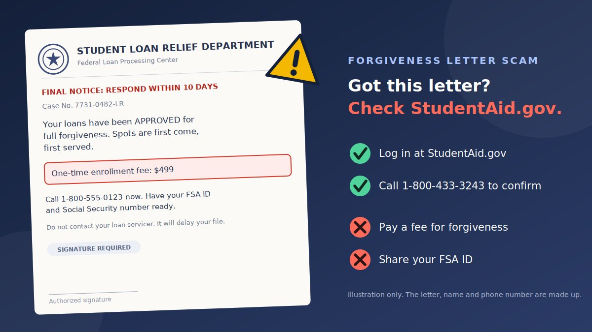

A thick envelope arrives with an official-sounding return address. Inside is a letter that says your federal student loans have been "approved for forgiveness," with a case number, a deadline, and a phone number to call. After years of headlines about forgiveness, changing repayment plans, and new rules, the message feels believable. That is exactly the point. This guide explains how the fake student loan forgiveness letter scam works, how to check any letter in a few minutes, and what to do if you already responded.
How the fake forgiveness letter scam works
The scam copies the look of government mail: a letterhead, a seal-like logo, a "case number," and a deadline. Federal Student Aid (FSA), the Department of Education office that manages federal student aid, warns that scammers use official-looking names, seals, and logos and promise results that no legitimate program can deliver.
- The letter. A mailed letter, sometimes followed by a call, text, or email, says your loans qualify for forgiveness, consolidation, or a special program.
- The pressure. It sets a short deadline, or says spots are limited.
- The hook. You are told to call a number, fill in a form, or pay an enrollment fee, often with your FSA ID and Social Security number "ready."
- The takeover. The scammer collects a fee, your login, or your signature on an "authorization" that lets them act on your loans.
Why it works so well right now
Reporting in September 2026 that summarizes Department of Education warnings says fraudsters are taking advantage of uncertainty around federal student loan repayment rules that took effect this summer, with fake offers of debt relief, consolidation, or forgiveness. FTC coverage of an April 2026 case also described operators who posed as the Education Department or borrowers' real servicers and charged upfront fees of up to $1,400. When rules really are changing, a letter that mentions "new guidelines" sounds plausible.
Common versions of the letter
| Version | What it says | What the scammer wants |
|---|---|---|
| "Approved for forgiveness" | Your loans qualify for full or partial forgiveness. Call within days. | A phone call, then a fee and your details |
| "Consolidation deadline" | Consolidate now to keep your benefits or qualify for a special program | An upfront fee, or control of your account |
| "Enrollment or authorization form" | Sign and return the enclosed form, with your FSA ID | Your login, or your signature on an authorization |
| "Default and garnishment" | Your loan is in default. Act now to avoid wage garnishment | Fear-driven payment or personal details |
| Letter plus follow-up | A call, text, or email that references your "case" | To make the letter feel real and speed you up |
What real federal student loan help looks like
Most guides list red flags. Knowing what the real thing looks like makes the fake easier to spot. According to Federal Student Aid:
- Help is free. Your loan servicer can help you lower your payment, consolidate federal loans, switch repayment plans, and check forgiveness programs at no cost, and the government's forgiveness programs are always free.
- Real programs take time. Most government forgiveness programs require years of qualifying payments, employment in certain fields, or both. Real programs include the Federal Direct Consolidation Loan Program, Public Service Loan Forgiveness (PSLF), and Teacher Loan Forgiveness.
- Aggressive language is not from them. The Department says phrases like "act immediately before the program is discontinued," "first come, first served," or "call now" will not come from it or its partners.
- Nobody legitimate asks for your password. The Department and its partners, including servicers, will never ask for your StudentAid.gov username and password.
Official senders and servicers
| Channel | What FSA says is official |
|---|---|
Only from noreply@studentaid.gov, noreply@debtrelief.studentaid.gov, and ed.gov@public.govdelivery.com | |
| Text message | Only from the short codes 227722 or 51592 |
| Phone check | The Federal Student Aid Information Center (FSAIC): 1-800-433-3243 |
| Servicer websites | Aidvantage, CRI, Edfinancial, MOHELA, and Nelnet use addresses on studentaid.gov (for example mohela.studentaid.gov). Default Resolution Group uses myeddebt.ed.gov, and ECSI uses efpls.ed.gov. |
These lists can change, so check FSA's official scam guidance for the current version. Also note that these rules cover federal loans. If your loans are private, the FTC says to go straight to your loan company for help, and federal forgiveness programs do not apply to private loans.
Warning signs of a fake forgiveness letter
- It asks for a fee, up front or monthly, for forgiveness, consolidation, or "processing." FSA and the FTC both say you never have to pay for this help.
- It promises immediate, guaranteed, or total cancellation. Real forgiveness takes years of qualifying payments or work.
- It creates urgency: "respond within 10 days," "final notice," "limited spots."
- It asks for your FSA ID, StudentAid.gov login, or Social Security number.
- The sender has an unofficial name such as "Student Loan Department," "Debt Relief Department," or "Federal Loan Processing Center," and no clear connection to your servicer. The District of Columbia's insurance and banking regulator notes that the Department of Education does not list a "Student Loan Department."
- It tells you to call a number in the letter instead of your servicer's number.
- It uses seals, logos, and a "case number" to look official. The FTC says not to rely on government seals or logos to decide what is real.
- It asks you to sign an authorization, a power of attorney, or a "service agreement."
- It tells you not to contact your servicer or to keep the offer private.
- It contains typos or odd capitalization, which FSA lists as a sign of a possible scam. Good spelling, though, proves nothing, because AI tools make polished scams easy.
Scam letter examples
These are composite examples written to show the pattern. They are not copies of real letters, and the names, numbers, and amounts are made up.
Example 1: The "approved for forgiveness" letter
- Header
- Student Loan Relief Department, Federal Loan Processing Center
- Subject
- FINAL NOTICE: Respond within 10 days
Case No. 7731-0482. Your federal loans have been approved for full forgiveness. Spots are first come, first served. Call 1-800-555-0123 now. A one-time enrollment fee of $499 applies.
Why it's a scam: an unofficial department name, a deadline, an enrollment fee, and a phone number you have to call. Forgiveness is free, and FSA says "first come, first served" language will not come from it.
Example 2: The "consolidation deadline" letter
- Header
- National Student Aid Assistance Office
- Subject
- Action required: consolidate by the end of the month
To keep your repayment benefits, you must consolidate your loans by the deadline. Our specialists will complete everything for you. Service fee: $349, payable by phone.
Why it's a scam: consolidation through the real Federal Direct Consolidation Loan Program is free. A fake "deadline" and a fee for something you can do yourself are classic signs.
Example 3: The "authorization form" letter
- Header
- Federal Loan Relief Program
- Enclosed
- Enrollment and authorization form
Complete and sign the enclosed form so we can manage your loans on your behalf. Write your FSA ID and Social Security number in the boxes. Do not contact your servicer, as it may delay your file.
Why it's a scam: it asks for your FSA ID and a signature, and tells you to avoid your servicer. FSA says you may need to revoke any authorization a scammer has on file.
Example 4: The "default and garnishment" letter
- Header
- Federal Collections Division
- Subject
- Your wages may be garnished
Your loan is in default. To stop garnishment, confirm your Social Security number and make a payment of $250 today using the number below.
Why it's a scam: a fear-driven payment demand and a request to "confirm" your Social Security number. The Department of Education says fake collection agencies also ask for your SSN or FSA ID. Check your loan status on StudentAid.gov.
Example 5: The letter followed by a call or text
- Channel
- A text or call days after the letter arrives
"This is the Student Loan Department following up on your case number. Your file will close tomorrow. Please have your FSA ID ready."
Why it's a scam: the follow-up references the "case number" from the letter to make it feel real. Texts from FSA come only from the short codes 227722 or 51592.
Quick checks: sender and letter
These two helpers run in your browser, and nothing you type leaves this page. They are quick aids, not guarantees. A match with an official address can still be spoofed, so always confirm by logging in to StudentAid.gov yourself.
Check an email address or text short code
Check the letter for red flags
How to verify a student loan letter
- Do not call the number in the letter, and do not sign or return anything yet.
- Log in at StudentAid.gov. Type the address yourself. Your account dashboard shows your federal loans and who your servicer is.
- Check for the same message in your account, and compare the sender with the servicer listed there and with the official list above.
- Call the Federal Student Aid Information Center at 1-800-433-3243 to confirm whether the Department sent it, or contact your servicer using the contact details inside your account or on your latest statement.
- If your loans are private, call your lender using the number on your statement. Federal forgiveness programs do not apply to private loans.
- Check the company. FSA suggests checking with your local Better Business Bureau for complaints about a company, although a clean record is not proof that it is safe.
- Ask for a second opinion. Show the letter to a trusted person, a school financial aid office, or a nonprofit credit counselor before you act.
- Keep the letter and envelope. You will need them if you report it.
Prevention tips
- Bookmark StudentAid.gov and use the bookmark instead of links or numbers in messages and letters.
- Protect your FSA ID. Do not give it to anyone for any reason. FSA, the FTC, and the CFPB all say so, because it works like your signature.
- Never pay upfront for federal student loan help, and be cautious of "monthly management" fees.
- Know your servicer and the official addresses and short codes above, and save your servicer's number from your account.
- Keep your contact details current on StudentAid.gov so real notices reach you, and check them occasionally for changes you did not make.
- Use a strong, unique password and two-step verification for your StudentAid.gov account and your email.
- Slow down. A real deadline will survive a day of checking. A scam's deadline will not.
- Share the warning with younger relatives, recent graduates, and parents who co-signed or took Parent PLUS loans.
- Be careful with social media and ads that promise "special access" to forgiveness. The FTC warns against buying promises of special access.
- Shred mail with your loan details, since fraudsters can use the account numbers and case details to sound credible.
What to do if you have been scammed
Act fast, and do not be embarrassed. These letters are built to look official and to arrive when borrowers are worried. Follow the steps that match what happened.
If you called, replied, or returned a form
- Stop all contact with the sender, and do not send anything more.
- Contact your federal loan servicer to confirm that no unwanted actions were taken on your loans, and to revoke any authorization agreement that your servicer has on file. FSA gives this advice.
- Check your StudentAid.gov account information, including contact email, address, and phone number.
If you shared your FSA ID or StudentAid.gov login
- Log in to StudentAid.gov and change your password right away, and change it anywhere else you used the same one.
- Check that your contact email, address, and phone number are still yours. A scammer who gets in can change them, and the FTC warns they can cut you off from your servicer or steal your identity.
- File a complaint with FSA so it can monitor your account for continued suspicious activity.
If you paid a fee
- Contact your bank or credit card company right away to stop further payments to the company that scammed you, and ask about disputing the charge. FSA advises this.
- If you paid through a payment app or money transfer service, report it to that company and ask whether the payment can be reversed.
- Cancel any recurring payments or authorizations you signed up for.
If you shared your Social Security number or ID
- Report it at IdentityTheft.gov, which gives you a recovery plan.
- Consider placing a fraud alert or a credit freeze with the credit bureaus, and check your credit reports for accounts you did not open.
- Watch for new student aid or loan activity in your name.
No one can promise that you will get your money back. Be wary of anyone who contacts you offering to recover your money or erase your loans for a fee, because that is often a second scam.
Where to report, in every state
| Who | What to report |
|---|---|
| Federal Student Aid feedback center | Any suspected student loan scam, especially if your StudentAid.gov account is involved |
| ReportFraud.ftc.gov (Federal Trade Commission) | Any scam, in any state. The FTC says you can report even if you only received a suspicious message. |
| Consumer Financial Protection Bureau | Complaints about student loan companies and debt relief |
| Your state attorney general | Consumer protection reports for your state. Use the directory to find your office. |
| U.S. Postal Inspection Service | Scams that arrived by mail, such as fake letters |
| Department of Education Office of Inspector General | Fraud involving federal student aid programs |
Some states and cities also have a student loan ombudsman or a state higher education or banking regulator that takes complaints. Your state attorney general's office can point you to the right one.
Conclusion
The fake student loan forgiveness letter works because it arrives when borrowers are confused, looks official, and promises relief. The defense is simple and works in every state. Real federal help is free, real forgiveness takes years of qualifying payments or work, and the Department of Education and its servicers will never ask for your StudentAid.gov password. Verify through StudentAid.gov or the Federal Student Aid Information Center, not through the number on the letter, and report anything that asks for a fee or your login.
The same pressure appears in other scams. Read our guides on the fake AI identity reverification scam, the fake digital identity verification link scam, and the fake HMRC refund text scam, which covers a similar government refund trick in the United Kingdom.
Got a letter, email, or text you are unsure about? Paste the text into our free checker for a quick first read.
Frequently asked questions
Is a letter saying my student loans are approved for forgiveness real?
Be very cautious. Federal Student Aid says its forgiveness programs are free, that most require years of qualifying payments or employment, and that aggressive claims such as act now or first come, first served will not come from the Department of Education or its partners. Check your loans by logging in to StudentAid.gov yourself.
Do I ever have to pay for federal student loan forgiveness or help?
No. Federal Student Aid and the Federal Trade Commission say you do not have to pay for help managing federal student loans or reaching forgiveness. Your loan servicer can help you for free, so a request for an upfront or monthly fee is a red flag.
How can I verify a student loan letter?
Do not call the number in the letter. Log in to StudentAid.gov, which you type yourself, to see your loans and servicer, contact your servicer through the details shown there, or call the Federal Student Aid Information Center at 1-800-433-3243 to confirm whether a message really came from the Department.
What if my loans are private, not federal?
Federal forgiveness programs apply to federal loans. For private loans, go directly to your loan company, using the contact details on your statement, and be cautious of any letter claiming government forgiveness for private debt.
What should I do if I gave my FSA ID or paid a fee?
Log in to StudentAid.gov and change your password, check your contact details, contact your loan servicer to make sure no unwanted actions were taken or to revoke an authorization, contact your bank or card company to stop payments, and file complaints with Federal Student Aid, the FTC, and the CFPB.
Where do I report a student loan scam in my state?
You can report to Federal Student Aid, the FTC at ReportFraud.ftc.gov, and the CFPB from any state. Also report to your state attorney general's consumer protection office, and to the U.S. Postal Inspection Service if the scam arrived by mail.
Got a letter, email, or text about your student loans?
Run it through the checker